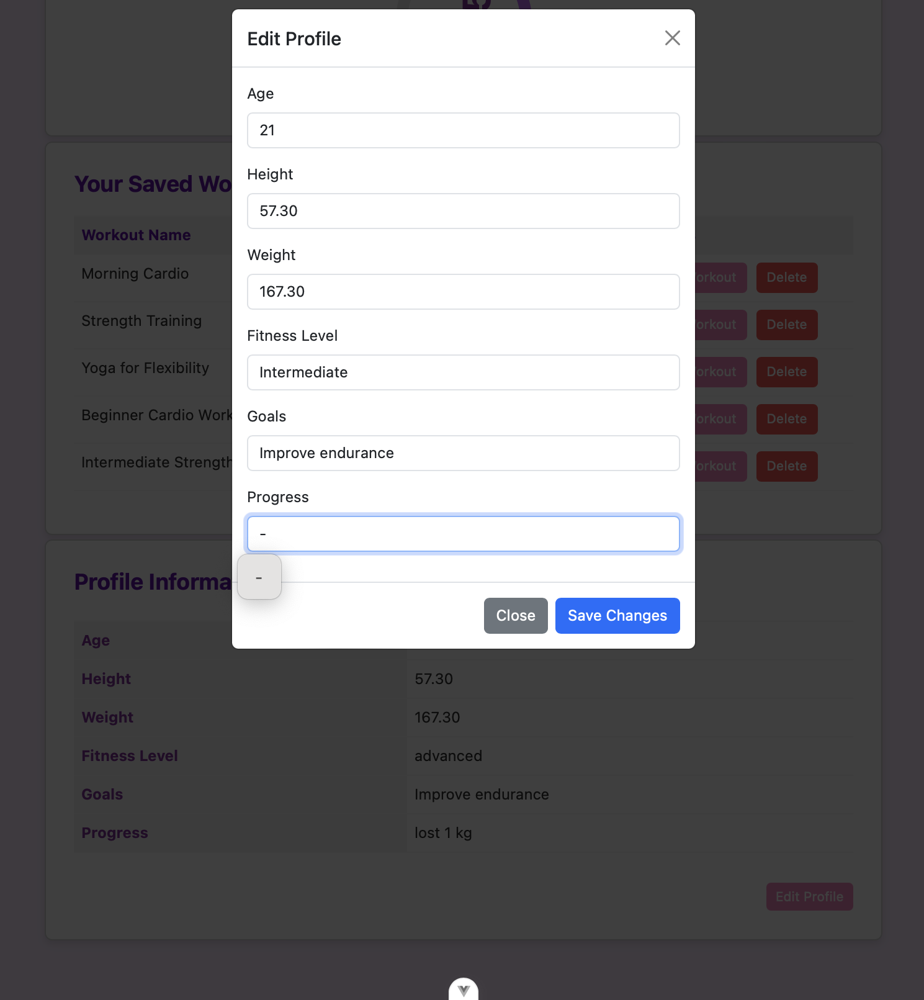
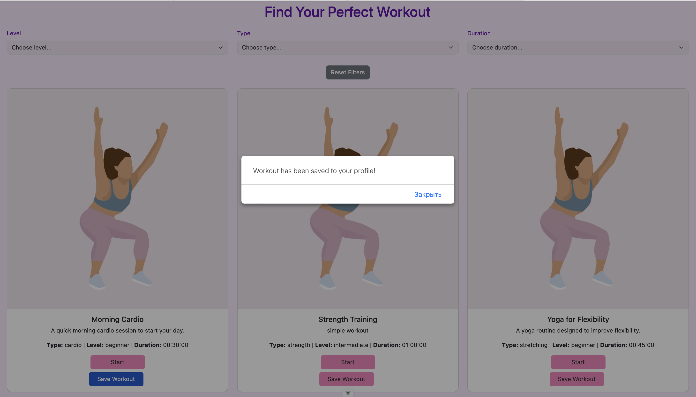
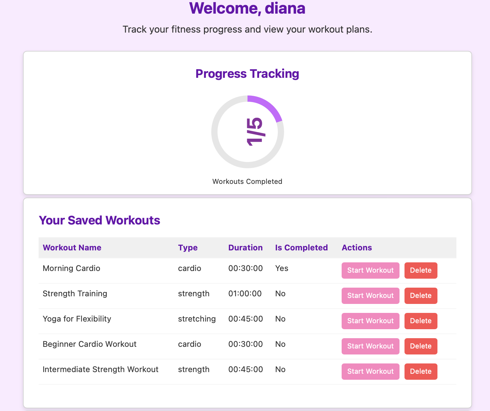
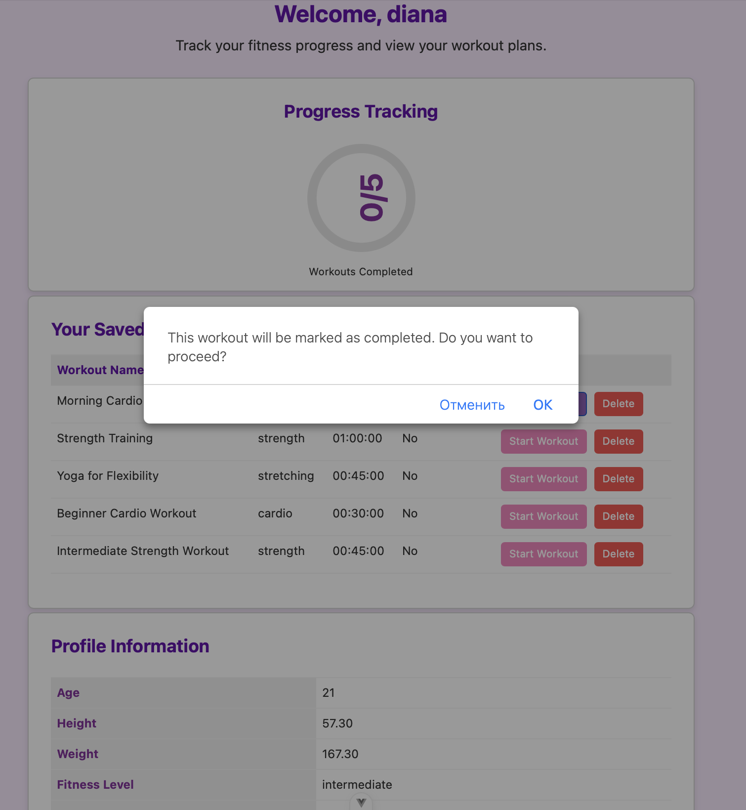
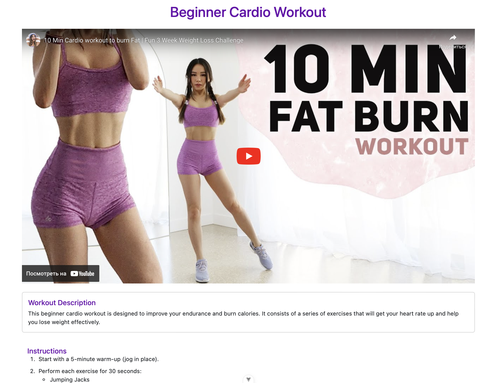
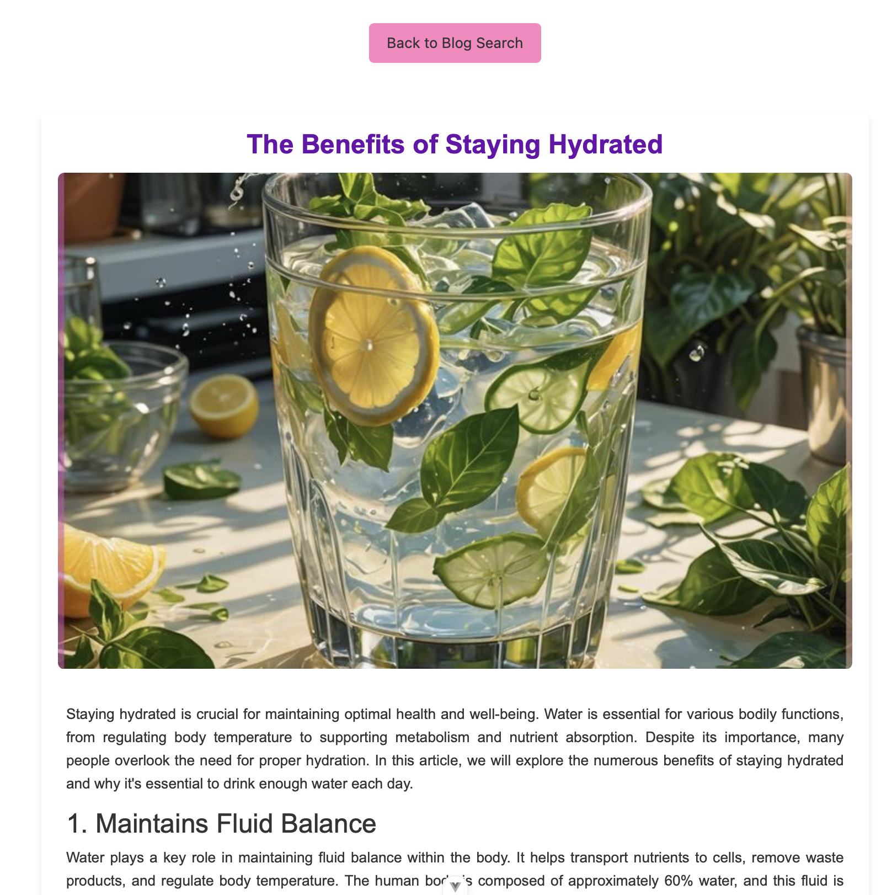

Components
Компоненты для аккаунта пользователя.
Модальное окно для изменения данных
Когда пользователь заходит в личный кабинет, то одна из компонент - таблица с данными профиля. При первом входе в аккаунт она пустая, при нажатии кнопки edit profile - всплывающее окно для заполнения данных.

template>
<div
class="modal fade"
id="editProfileModal"
aria-labelledby="editProfileModalLabel"
aria-hidden="true"
>
<div class="modal-dialog">
<div class="modal-content">
<div class="modal-header">
<h5 class="modal-title" id="editProfileModalLabel">Edit Profile</h5>
<button
type="button"
class="btn-close"
data-bs-dismiss="modal"
aria-label="Close modal window"
></button>
</div>
<div class="modal-body">
<form id="editProfileForm">
<div class="mb-3">
<label for="userAge" class="form-label">Age</label>
<input
type="number"
class="form-control"
v-model="profile.age"
id="userAge"
required
/>
</div>
<div class="mb-3">
<label for="userHeight" class="form-label">Height</label>
<input
type="number"
step="0.1"
class="form-control"
v-model="profile.height"
id="userHeight"
required
/>
</div>
<div class="mb-3">
<label for="userWeight" class="form-label">Weight</label>
<input
type="number"
step="0.1"
class="form-control"
v-model="profile.weight"
id="userWeight"
required
/>
</div>
<div class="mb-3">
<label for="fitnessLevelEdit" class="form-label">Fitness Level</label>
<select
class="form-control"
v-model="profile.fitness_level"
id="fitnessLevelEdit"
>
<option value="beginner">Beginner</option>
<option value="intermediate">Intermediate</option>
<option value="advanced">Advanced</option>
</select>
</div>
<div class="mb-3">
<label for="userGoals" class="form-label">Goals</label>
<select class="form-control" v-model="profile.goals" id="userGoals">
<option>Lose weight</option>
<option>Gain weight</option>
<option>Improve endurance</option>
<option>Build muscle</option>
<option>Increase flexibility</option>
</select>
</div>
<div class="mb-3">
<label for="userProgress" class="form-label">Progress</label>
<input
type="text"
class="form-control"
v-model="profile.progress"
id="userProgress"
required
/>
</div>
<div
v-if="errorMessage"
class="alert alert-danger mt-3"
role="alert"
>
{{ errorMessage }}
</div>
<div
v-if="successMessage"
class="alert alert-success mt-3"
role="alert"
>
{{ successMessage }}
</div>
</form>
</div>
<div class="modal-footer">
<button
type="button"
class="btn btn-secondary"
data-bs-dismiss="modal"
>
Close
</button>
<button
type="button"
class="btn btn-primary"
@click="handleSaveClick"
>
Save Changes
</button>
</div>
</div>
</div>
</div>
</template>
<script>
import { Modal } from "bootstrap";
export default {
props: {
userId: {
type: Number,
required: true,
},
},
data() {
return {
profile: {
age: null,
height: null,
weight: null,
fitness_level: "beginner",
goals: "Lose weight",
progress: "",
},
errorMessage: "",
successMessage: "",
};
},
mounted() {
this.loadProfile();
this.initModal();
},
methods: {
initModal() {
const modalElement = document.getElementById("editProfileModal");
const bootstrapModal = Modal.getOrCreateInstance(modalElement);
modalElement.addEventListener("hidden.bs.modal", () => {
this.errorMessage = "";
this.successMessage = "";
});
},
async loadProfile() {
try {
const response = await fetch("http://127.0.0.1:8000/app/profiles/");
if (!response.ok) throw new Error(`Error ${response.status}`);
const profiles = await response.json();
const user = profiles.find((p) => p.user === this.userId);
if (user) this.profile = { ...user };
} catch (error) {
console.error("Error loading profile:", error);
}
},
async handleSaveClick() {
console.log("Save Changes button clicked");
const endpoint = this.profile.id
? `http://127.0.0.1:8000/app/profiles/${this.profile.id}/update/`
: "http://127.0.0.1:8000/app/profiles/create/";
const method = this.profile.id ? "PATCH" : "POST";
// Преобразование значений в числа с плавающей точкой
const requestData = {
age: this.profile.age,
height: this.profile.height ? parseFloat(this.profile.height).toFixed(2) : null,
weight: this.profile.weight ? parseFloat(this.profile.weight).toFixed(2) : null,
fitness_level: this.profile.fitness_level.toLowerCase(),
goals: this.profile.goals,
progress: this.profile.progress,
};
console.log("Sending data:", requestData);
try {
const response = await fetch(endpoint, {
method,
headers: { "Content-Type": "application/json" },
body: JSON.stringify(requestData),
});
if (!response.ok) throw new Error(`Error ${response.status}`);
this.successMessage = this.profile.id
? "Profile updated!"
: "Profile created!";
setTimeout(() => (this.successMessage = ""), 3000);
this.closeModal();
} catch (error) {
this.errorMessage = "Failed to save changes.";
console.error("Error saving profile:", error);
}
},
closeModal() {
const modalElement = document.getElementById("editProfileModal");
const bootstrapModal = Modal.getOrCreateInstance(modalElement);
bootstrapModal.hide();
const backdrop = document.querySelector(".modal-backdrop");
if (backdrop) {
backdrop.remove();
}
document.body.style.overflow = "";
},
},
};
</script>
Таблица сохраненных тренировок
Пользователь может сохранять тренировки на странице с тренировками. После нажатия кнопки save workout появляется всплывающее уведомление:

Таблица с сохраненными тренировками выглядит так после сохранений:
Также у нас есть кнопка start напротив каждой сохраненной тренировки. Если мы нажмем на нее, то появится уведомление о том, что тренировка будет отмечена завершенной.
После нажатия кнопки OK, переход на страницу с тренировкой:
<template>
<div>
<ProgressTracker
:totalWorkouts="workouts.length"
:workoutsCompleted="workouts.filter(workout => workout.isCompleted).length"
/>
<div class="card" aria-labelledby="workoutSchedule">
<div class="card-body">
<h2 class="card-workout-title" id="workoutSchedule">Your Saved Workouts</h2>
<table class="table">
<thead>
<tr>
<th scope="col">Workout Name</th>
<th scope="col">Type</th>
<th scope="col">Duration</th>
<th scope="col">Is Completed</th>
<th scope="col">Actions</th>
</tr>
</thead>
<tbody>
<tr v-if="workouts.length === 0">
<td colspan="5" class="text-center">No saved workouts yet</td>
</tr>
<tr v-for="workout in workouts" :key="workout.id">
<td>{{ workout.title }}</td>
<td>{{ workout.type }}</td>
<td>{{ workout.duration }}</td>
<td>{{ workout.isCompleted ? 'Yes' : 'No' }}</td>
<td>
<button class="btn btn-primary btn-sm" @click="handleStartWorkout(workout)">
Start Workout
</button>
<button class="btn btn-danger btn-sm" @click="deleteWorkout(workout.id)">
Delete
</button>
</td>
</tr>
</tbody>
</table>
</div>
</div>
</div>
</template>
<script>
import ProgressTracker from './ProgressTracker.vue';
export default {
name: "SavedWorkouts",
components: { ProgressTracker },
props: {
userId: {
type: Number,
required: true,
},
},
data() {
return {
workouts: [],
};
},
methods: {
async fetchSavedWorkouts() {
try {
const workoutPlansResponse = await fetch("http://127.0.0.1:8000/app/workout-plans/");
const workoutPlans = await workoutPlansResponse.json();
const userWorkoutPlans = workoutPlans.filter((plan) => plan.user === this.userId);
const workoutsResponse = await fetch("http://127.0.0.1:8000/app/workouts/");
const allWorkouts = await workoutsResponse.json();
const userWorkouts = allWorkouts.filter((workout) =>
userWorkoutPlans.some((plan) => plan.workout === workout.id)
);
const savedWorkouts = JSON.parse(localStorage.getItem("savedWorkouts")) || [];
this.workouts = userWorkouts.map((workout) => {
const savedWorkout = savedWorkouts.find((w) => w.id === workout.id);
return {
id: workout.id,
title: workout.title,
type: workout.type,
duration: workout.duration,
isCompleted: savedWorkout ? savedWorkout.isCompleted : false,
};
});
localStorage.setItem("savedWorkouts", JSON.stringify(this.workouts));
} catch (error) {
console.error("Error fetching saved workouts:", error);
}
},
handleStartWorkout(workout) {
const confirmation = window.confirm('This workout will be marked as completed. Do you want to proceed?');
if (confirmation) {
// Обновляем состояние тренировки
this.workouts = this.workouts.map((w) =>
w.id === workout.id ? { ...w, isCompleted: true } : w
);
const updatedWorkouts = JSON.parse(localStorage.getItem("savedWorkouts")) || [];
const syncedWorkouts = updatedWorkouts.map((w) =>
w.id === workout.id ? { ...w, isCompleted: true } : w
);
localStorage.setItem("savedWorkouts", JSON.stringify(syncedWorkouts));
// Сохраняем текущую тренировку и переходим на страницу тренировки
localStorage.setItem("currentWorkout", JSON.stringify(workout));
this.$router.push({ name: "Workout" });
}
},
deleteWorkout(workoutId) {
this.workouts = this.workouts.filter((workout) => workout.id !== workoutId);
const updatedWorkouts = JSON.parse(localStorage.getItem("savedWorkouts")) || [];
const filteredWorkouts = updatedWorkouts.filter((w) => w.id !== workoutId);
localStorage.setItem("savedWorkouts", JSON.stringify(filteredWorkouts));
},
},
mounted() {
this.fetchSavedWorkouts();
},
};
</script>
Карточка тренировки в таблице
Код для тренировки в таблице с полями название, тип, продолжительность, завершена ли:
<template>
<tr>
<td>{{ workout.title }}</td>
<td>{{ workout.type }}</td>
<td>{{ workout.duration }}</td>
<td>{{ workout.isCompleted ? "Yes" : "No" }}</td>
<td class="button-container">
<button @click="startWorkout" class="btn btn-warning">Start Workout</button>
<button @click="$emit('delete', workout.id)" class="btn btn-danger">Delete</button>
</td>
</tr>
</template>
<script>
export default {
name: "WorkoutCard",
props: {
workout: Object,
},
methods: {
startWorkout() {
const confirmed = window.confirm("This workout will be marked as completed.");
if (confirmed) {
this.$emit("start", this.workout);
}
},
},
};
</script>
<style scoped>
.button-container {
display: flex;
justify-content: space-between;
gap: 10px;
}
.btn {
width: 60%;
}
</style>
Кольцо прогресс-трекера
Кольцо считает за сто процентов количество всех сохраненных тренировок, за выполненные тренировки те, у которых статус Is Completed - ‘Yes’. Когда пользователь нажимает start workout, он переходит на страницу тренировки. когда он возвращается в личный кабинет, то статус меняется на Yes и счетчик кольца увеличивается.
<template>
<div class="card us_progress" aria-labelledby="progressTracking">
<div class="card-body">
<h2 class="card-title" id="progressTracking">Progress Tracking</h2>
<div class="d-flex justify-content-center">
<div class="circle-progress" aria-labelledby="workoutsCompleted">
<svg viewBox="0 0 36 36">
<circle class="bg-circle" cx="18" cy="18" r="16" fill="none" stroke-width="3"></circle>
<circle
class="main-circle-workouts"
cx="18" cy="18" r="16" fill="none" stroke-width="3"
:stroke-dasharray="workoutsProgress + ', 100'"
></circle>
<text x="50%" y="50%" class="progress-text" text-anchor="middle" dy=".3em">
{{ workoutsCompleted }}/{{ totalWorkouts }}
</text>
</svg>
<p id="workoutsCompleted">Workouts Completed</p>
</div>
</div>
</div>
</div>
</template>
<script>
export default {
name: "ProgressTracker",
props: {
totalWorkouts: {
type: Number,
required: true,
},
workoutsCompleted: {
type: Number,
required: true,
},
},
computed: {
workoutsProgress() {
return this.totalWorkouts > 0
? (this.workoutsCompleted / this.totalWorkouts) * 100
: 0;
},
},
};
</script>
Компоненты для блога.
Страница поста
При нажатии в карточке поста на кнопку read more открывается страница поста. Это большая карточка с картинкой, заголовком и содержанием.

<template>
<div class="post-container">
<!-- Кнопка возврата на блог -->
<div class="back-btn-container">
<router-link to="/blog" class="btn btn-primary">
Back to Blog Search
</router-link>
</div>
<div class="post-card">
<h1 class="post-title">{{ post.title }}</h1>
<img :src="post.image" alt="Post Image" class="post-image" />
<div class="post-content" v-html="formattedContent"></div>
</div>
</div>
</template>
<script>
export default {
name: 'Post',
data() {
return {
post: {
title: 'The Benefits of Staying Hydrated',
image: '/public/hydro.jpg',
content: `
<p>Staying hydrated is crucial for maintaining optimal health and well-being. Water is essential for various bodily functions, from regulating body temperature to supporting metabolism and nutrient absorption. Despite its importance, many people overlook the need for proper hydration. In this article, we will explore the numerous benefits of staying hydrated and why it's essential to drink enough water each day.</p>
<h2>1. Maintains Fluid Balance</h2>
<p>Water plays a key role in maintaining fluid balance within the body. It helps transport nutrients to cells, remove waste products, and regulate body temperature. The human body is composed of approximately 60% water, and this fluid is constantly being lost through sweat, urine, and respiration. Therefore, it’s essential to replenish water intake throughout the day to maintain proper fluid balance.</p>
<h2>2. Supports Digestion</h2>
<p>Proper hydration aids in the digestion process by facilitating the movement of food through the gastrointestinal tract. It helps break down food particles and enables the absorption of nutrients in the stomach and intestines. Without adequate water, your digestive system can become sluggish, leading to problems such as constipation and indigestion.</p>
<h2>3. Boosts Energy Levels</h2>
<p>Dehydration can cause fatigue, lethargy, and a decrease in cognitive function. Drinking enough water helps maintain energy levels by preventing the body from becoming sluggish. It also supports the brain’s function, improving concentration and memory, making you more productive throughout the day.</p>
<h2>4. Enhances Skin Health</h2>
<p>Staying hydrated is essential for healthy, glowing skin. Water helps flush out toxins and keeps skin cells nourished. Dehydration can lead to dry, flaky skin, as well as an increased risk of wrinkles and other skin issues. Drinking enough water helps maintain skin elasticity and can promote a healthy complexion.</p>
<h2>5. Regulates Body Temperature</h2>
<p>One of the most important functions of water is temperature regulation. Water helps to cool the body through sweating and evaporation, preventing overheating. This is particularly important during exercise or hot weather when the body is more prone to dehydration.</p>
<h2>6. Improves Physical Performance</h2>
<p>When exercising, staying hydrated is essential to maintain physical performance. Water helps regulate muscle function, improve endurance, and prevent cramps. Dehydration can lead to decreased strength, coordination, and stamina, making it difficult to achieve your fitness goals.</p>
<h2>7. Promotes Kidney Health</h2>
<p>The kidneys play a vital role in filtering toxins from the blood and producing urine. Adequate hydration ensures that the kidneys can function properly, reducing the risk of kidney stones and urinary tract infections (UTIs). Dehydration can cause kidney damage over time, as the kidneys must work harder to filter waste products without enough fluid.</p>
<p><strong>Conclusion:</strong></p>
<p>Hydration is key to overall health and well-being. From supporting bodily functions to improving skin health, digestion, and mental clarity, the benefits of drinking enough water are vast. Aim to drink at least 8 cups (about 2 liters) of water daily, or more if you are active or live in a hot climate. Your body will thank you for it, and you'll feel better, both physically and mentally, as a result. So, drink up and stay hydrated!</p>
`
},
};
},
computed: {
formattedContent() {
return this.post.content;
}
}
};
</script>
<style scoped>
:root {
--background-color: #fbeaff;
--text-color: #333;
--card-background: #fff;
--heading-color: #6a0dad;
--button-background: #ff85c0;
--button-border: #ff85c0;
}
.post-container {
padding: 20px;
max-width: 1400px;
margin: 0 auto;
display: flex;
flex-direction: column;
align-items: center;
}
.back-btn-container {
margin-bottom: 20px;
}
.post-card {
background-color: var(--card-background);
box-shadow: 0 4px 8px rgba(0, 0, 0, 0.1);
border-radius: 8px;
padding: 20px;
max-width: 1000px;
margin: 20px 0;
text-align: center;
font-family: Arial, sans-serif;
}
.post-title {
color: var(--heading-color);
font-size: 2rem;
margin-bottom: 15px;
font-weight: bold;
}
.post-image {
width: 100%;
height: 600px;
object-fit: cover;
margin-bottom: 20px;
border-radius: 8px;
}
.post-content {
font-size: 1.1rem;
line-height: 1.6;
color: var(--text-color);
padding: 0 10px;
text-align: justify;
margin-top: 20px;
}
.post-content h2 {
color: var(--heading-color);
font-size: 1.5rem;
margin-top: 15px;
font-weight: bold;
}
h2 {
color: var(--heading-color);
font-size: 1.5rem;
margin-top: 15px;
font-weight: bold;
}
p {
margin-bottom: 15px;
}
.btn-primary {
background-color: var(--button-background);
border-color: var(--button-border);
color: var(--text-color);
padding: 10px 20px;
text-align: center;
font-size: 1.1rem;
display: inline-block;
margin: 20px 0;
text-decoration: none;
}
.btn-primary:hover {
background-color: var(--button-border);
}
@media (max-width: 768px) {
.post-title {
font-size: 1.8rem;
}
.post-content {
font-size: 1rem;
}
}
</style>
Карточка поста в блоге
В карточке поста будем хранить заголовок, содержание и дату публикации для фильтрации.
<template>
<div class="col-md-4 mb-4">
<div class="card-article card h-100">
<img
v-if="post.image"
:src="getImageUrl(post.id)"
class="card-img-top"
:alt="post.title"
:aria-label="`Image for ${post.title}`"
@error="onImageError"
/>
<div class="card-body">
<h2 class="card-title">{{ post.title }}</h2>
<p class="card-text">
{{ truncatedContent }}
</p>
<a href="#" class="btn btn-primary" @click.prevent="onReadMore">
Read More
</a>
</div>
<div class="card-footer text-muted">
Published: {{ formattedDate }}
</div>
</div>
</div>
</template>
<script>
export default {
name: "BlogCard",
props: {
post: {
type: Object,
required: true,
},
},
computed: {
formattedDate() {
const options = { year: "numeric", month: "long", day: "numeric" };
return new Date(this.post.created_at).toLocaleDateString("ru-RU", options);
},
truncatedContent() {
return this.post.content.length > 100
? this.post.content.substring(0, 100) + "..."
: this.post.content;
},
},
methods: {
onReadMore() {
this.$emit("readMore", this.post.id);
},
async getImageUrl(postId) {
try {
const image = await import(`@/assets/${postId}.jpg`);
return image.default || require('@/assets/3.jpg');
} catch (error) {
console.error(`Image not found for post ${postId}, using fallback.`);
return require('@/assets/3.jpg');
}
},
onImageError(event) {
event.target.src = require("@/assets/3.jpg");
},
},
};
</script>
<style scoped>
:root {
--background-color: #fbeaff;
--text-color: #333;
--card-background: #fff;
--heading-color: #6a0dad;
--button-background: #ff85c0;
--button-border: #ff85c0;
--modal-background: rgba(0, 0, 0, 0.5);
}
.card-article {
display: flex;
flex-direction: column;
background-color: var(--card-background);
border-radius: 15px;
margin-bottom: 20px;
box-shadow: 0px 4px 8px rgba(0, 0, 0, 0.1);
}
.card-body {
flex-grow: 1;
display: flex;
flex-direction: column;
}
.card-footer {
background-color: var(--card-background);
border-top: 1px solid #ddd;
font-size: 0.9rem;
}
.btn-primary {
margin-top: auto;
background-color: var(--button-background);
border-color: var(--button-border);
color: var(--text-color);
width: 120px;
height: 40px;
}
h2.card-title {
color: var(--heading-color);
}
</style>